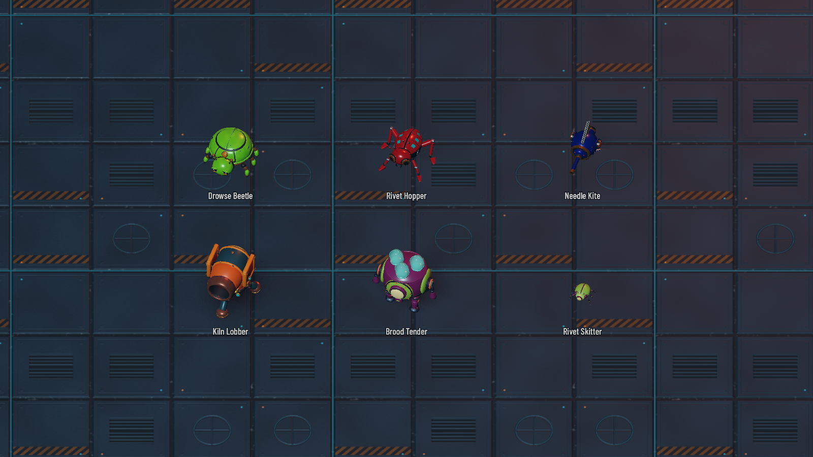
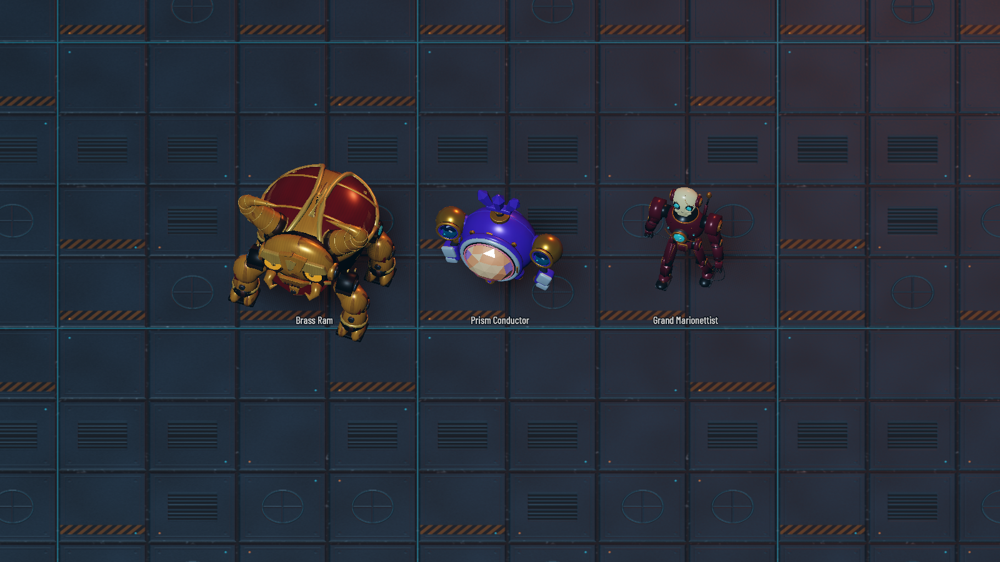
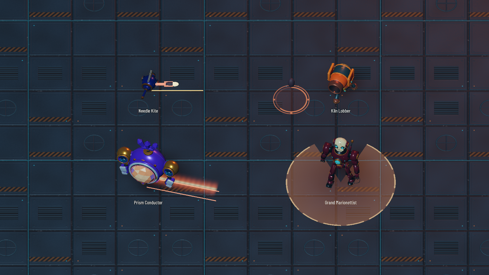
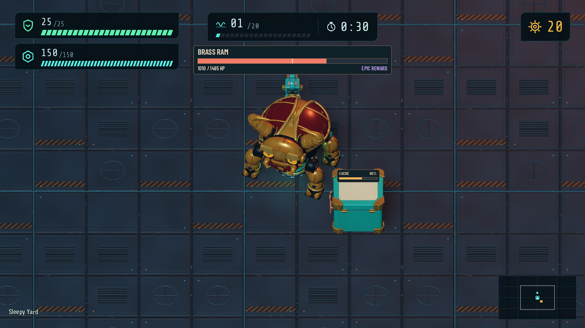
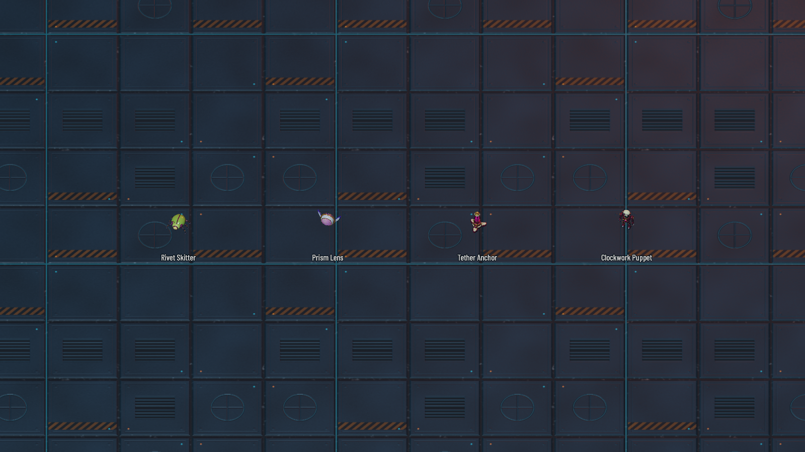

TURRET SURVIVOR · IMPLEMENTED · 11 OCTOBER 2026An arena with more
than one intention.
Twelve textured, animated models; five new regular enemies; three bosses; twenty authored wave rosters. These are captures from Godot with the imported game assets.
1,044 tests passedAll three modes checkedIdle / Walk / Swim / AttackThe regular enemies
Five distinct roles plus the summoned Skitter. Existing enemies are 10% smaller.

Three optional boss kills
Tanky hero-focused encounters on waves 6, 12 and 20. The timer still ends the round. Defeating a boss earns a high-rarity Keep / Sell reward.

Hostile attacks and warnings
Needles, falling shells, glowing beams and open escape sectors use a warm palette distinct from friendly attacks.

Readable health
A persistent boss bar with phase marks, plus a compact anchored chest bar.

Supporting cast
Dedicated animated models for Skitters, lenses, anchors and puppets.

Model inventory
Rounded silhouettes and moving hardware were prioritized over strict triangle budgets. Source Blender files, builders, texture maps and references are preserved. Performance has not been benchmarked.
| Model | Triangles | Role |
|---|
| Drowse Beetle | 30,072 | Meanders until disturbed; returns to wandering. |
| Rivet Hopper | 18,592 | Hero hunter with a warned, committed pounce. |
| Needle Kite | 17,168 | Keeps distance and fires aimed needles. |
| Kiln Lobber | 31,828 | Artillery that pressures the core or hero by mode. |
| Brood Tender | 33,044 | Deploys bounded waves of little Skitters. |
| Brass Ram | 27,792 | Wave 6: charges and alternating stomps. |
| Prism Conductor | 37,694 | Wave 12: volleys, sweeping beam and vulnerable lenses. |
| Grand Marionettist | 35,114 | Wave 20: volleys, puppets, tether anchors and gapped pulses. |
| Rivet Skitter | 11,548 | Small summoned pursuer. |
| Prism Lens | 7,760 | Orbiting support; breaking both stuns the boss. |
| Tether Anchor | 11,390 | Breakable tether source. |
| Clockwork Puppet | 14,205 | Summoned mechanical minion. |
Balance values are an initial playable pass, particularly boss health and late-wave pressure. Implementation notes · Design notebook